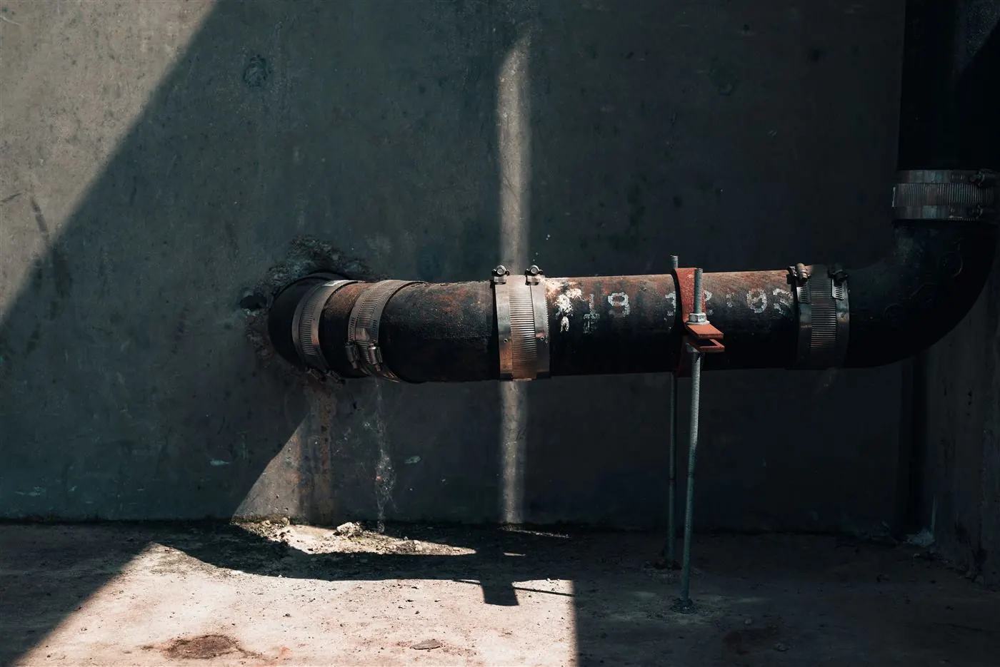
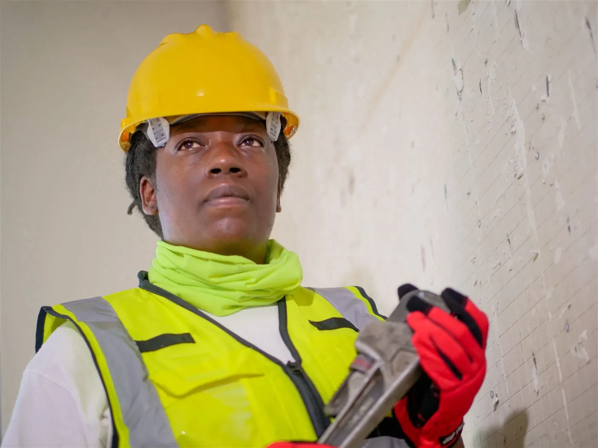
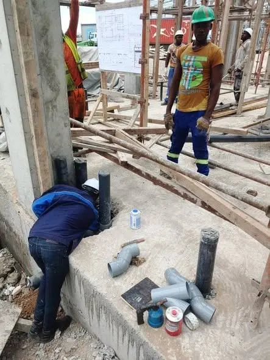
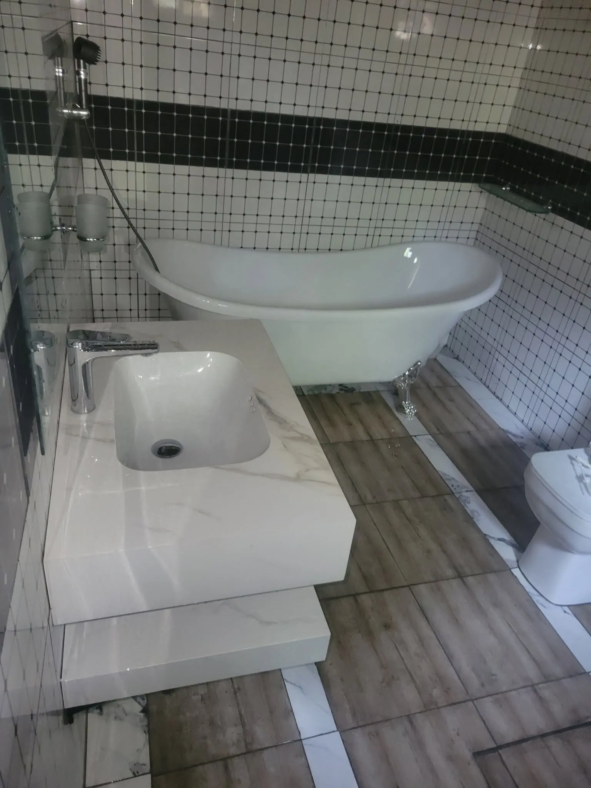
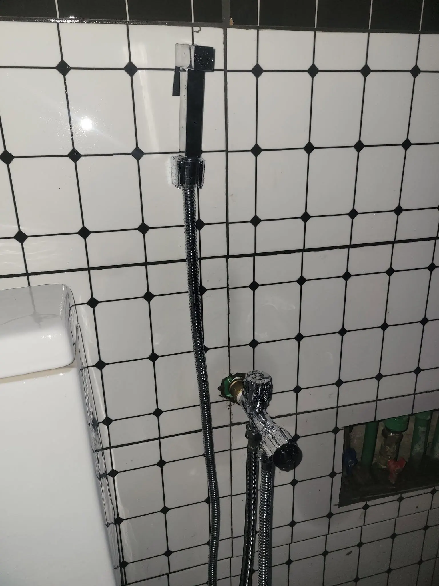
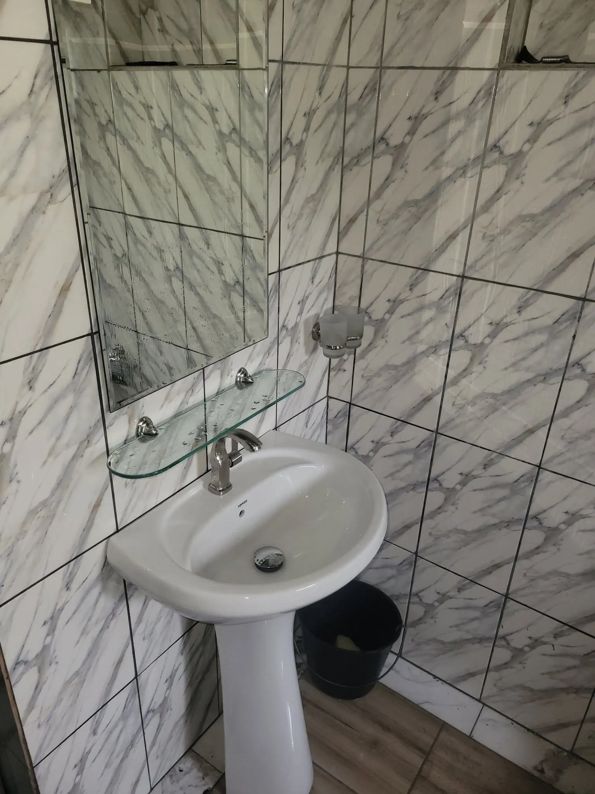
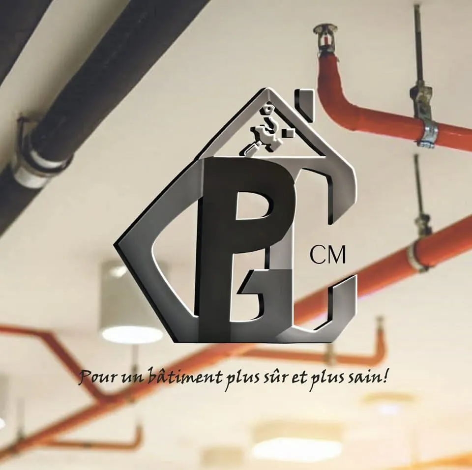
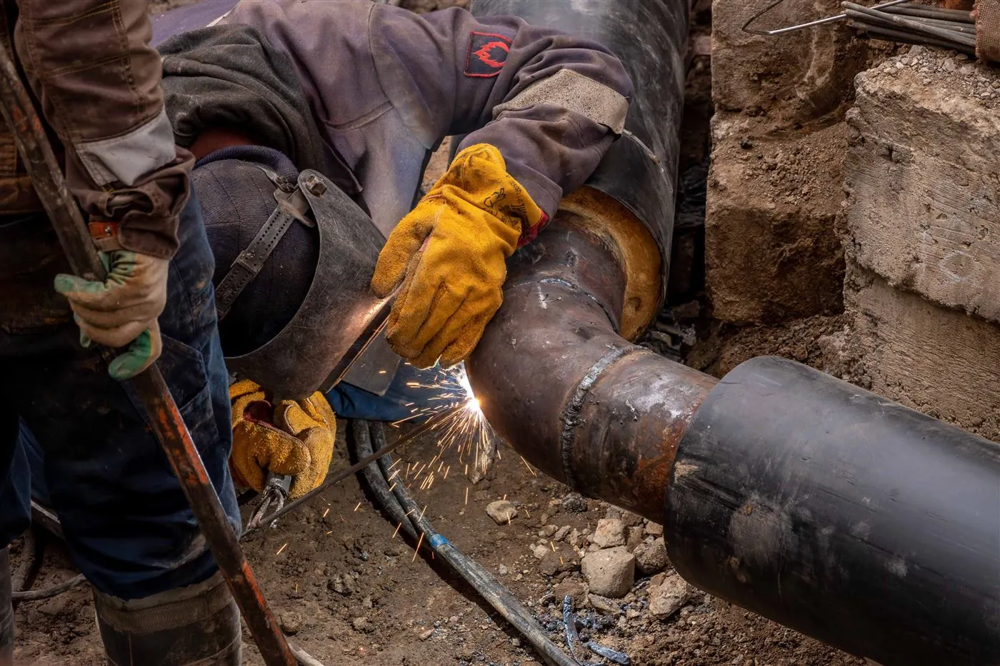

Plombier urgence
Tuyau éclaté, fuite qui coule vite, eau coupée. On arrive en priorité, de jour comme de nuit dans tout Douala.
Appeler maintenant
Une expertise de qualité pour tous vos problèmes de plomberie, tuyauterie & réseaux hydrauliques. Plombier de Douala, nous intervenons vite et proprement.

Un matin, plus d'eau au robinet. Ou pire : une fuite cachée dans le mur qui fait grimper la facture et abîme les carreaux. Vous appelez un plombier, il ne vient pas, ou il revient trois fois sans régler le problème. En pleine nuit, quand un tuyau éclate, on se sent seul face à l'eau qui coule.
PGC cm est le plombier professionnel de Douala qui change ça. Une équipe qualifiée, basée à Akwa, qui répond vite, localise le problème avec précision et répare proprement, sans casser plus que nécessaire. Du simple débouchage aux réseaux hydrauliques d'un chantier complet, vous avez un interlocuteur, un devis clair et un travail garanti.
« Un bâtiment plus sûr et plus sain. » — c'est notre promesse, à chaque intervention.
Découvrir PGC cmPlombier autour de vous à Douala : choisissez le service dont vous avez besoin, on s'occupe du reste.

Tuyau éclaté, fuite qui coule vite, eau coupée. On arrive en priorité, de jour comme de nuit dans tout Douala.
Appeler maintenant
Salle de bain complète, WC, cuisine. Que vous construisiez neuf ou que vous rénoviez, on installe tout proprement avec une garantie.
Demander un devis
Fuite visible ou cachée dans les murs. On localise le problème rapidement et on répare sans casser plus que nécessaire.
Demander un devis
WC bouché, évier qui ne coule plus, douche qui stagne. On débouche vos canalisations le jour même sans abîmer les carreaux.
Demander un devis
Installation et entretien des réseaux hydrauliques de votre piscine : pompes, tuyauterie, circulation et étanchéité.
Demander un devis
Réseaux de sprinklers et tuyauterie incendie pour des bâtiments plus sûrs : installation, contrôle et mise en conformité.
Demander un devisAppel, WhatsApp ou formulaire : décrivez votre souci de plomberie, on vous répond tout de suite.
On analyse le problème et on vous donne un prix clair, avant de toucher à quoi que ce soit.
Notre plombier de Douala intervient avec le bon matériel, proprement et sans casse inutile.
Vous validez le résultat. Chaque installation est livrée avec une garantie.
Soucis de plomberie ? Voici les réponses aux questions que l'on nous pose le plus souvent.
Pour une urgence (tuyau éclaté, grosse fuite, eau coupée), nous venons en priorité, de jour comme de nuit. Pour les autres demandes, nous passons en général sous 24 heures.
Oui. Nous évaluons votre besoin et vous donnons un prix clair avant le début des travaux, sans engagement.
Nous localisons d'abord la fuite avec précision, pour ne casser que le strict nécessaire, puis nous réparons et remettons proprement.
Dans la grande majorité des cas, oui. WC bouché, évier ou douche qui stagne : nous débouchons sans abîmer vos carreaux.
Oui, en neuf comme en rénovation : salle de bain, WC et cuisine, avec une garantie sur l'installation.
Oui, nous réalisons les réseaux hydrauliques de piscines ainsi que la tuyauterie de sécurité incendie (sprinklers).
Appelez le 693 41 58 63, écrivez-nous sur WhatsApp ou remplissez le formulaire de devis. Nous sommes disponibles du lundi au samedi dès 8h, et 24/7 pour les urgences.
